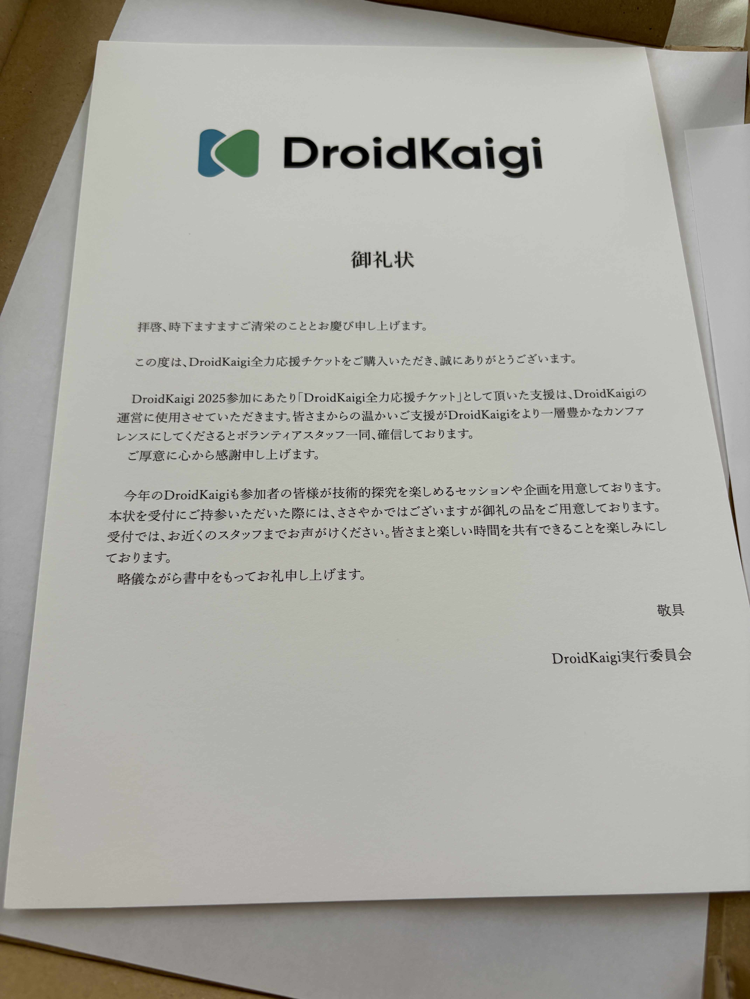
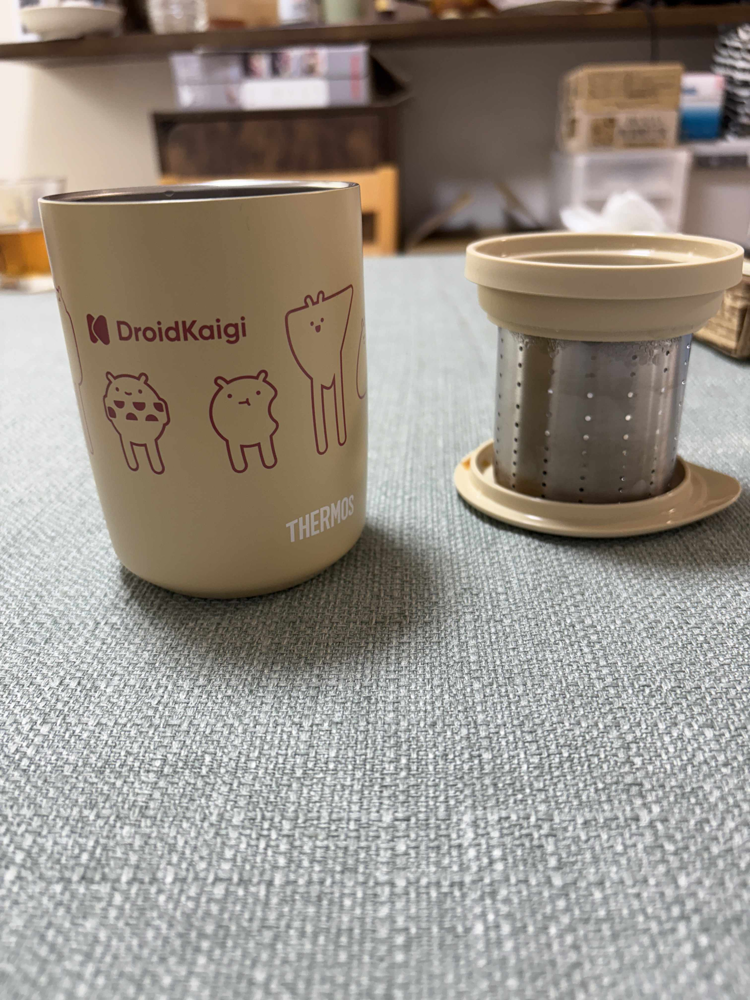
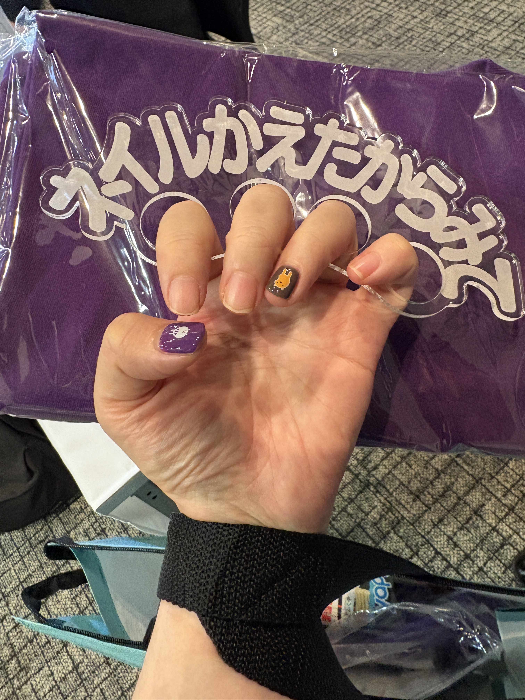

DroidKaigi2025 に参加しました
DroidKaigi 2025
DroidKaigi 2025
9/10(水)-9/12(金)にベルサール渋谷ガーデンにて開催された DroidKaigi 2025 にオフラインで参加してきました。
前回に引き続きフラー株式会社がブース出展を行ったため、出展側として参加してきました。
参加者として
セッション
特に印象深かったセッションは Androidエンジニアとしてのキャリア と スマホ新法って何？１２月施行？アプリビジネスに影響あるの？ です。
個人的にコードを書く仕事から徐々に離れていることもあり、自身の興味が技術の話よりもキャリアの話やビジネス全体の話に目が行きがちになっているなぁと思いました。
「Androidエンジニアとしてのキャリア」は、「自己の認知をハックする」というのが非常にわかりみが深かったです。自身の考えを俯瞰して客観視し、コントロール可能にしていくというのは、キャリアについてだけではなく人間の生き方全体に対して適用できる考え方かなぁと個人的には思っています。（これは勝手な考えですが）ちょっと仏教哲学的なところもあるかなと。 また、「人と話すのが苦手でエンジニアを選んだのに…」というのは自分もそうだったので「わかるわかるわかる」という気持ちでした。本当にどうして…
「スマホ新法って何？」については、エンジニアではない役所の方が DroidKaigi で登壇するというのが非常に新鮮で、内容もふだんあまり詳しく聞けない「法律の制定によって何が変わるのか」という部分をわかりやすく解説されていて、興味深く聞かせていただきました。スライド6枚で40分喋れるトーク力も素晴らしい。やたらと「名刺交換しましょう」というのを登壇中におっしゃっていて、面白くなってしまって名刺交換しに行きました（もちろん興味深い内容だったという感想をお伝えしたかったのもあります）。
企画
今回、全力応援した人に対する「御礼状」がチケットと同封されており、それを持参するとティーマグがもらえるという仕組みがありました。


これがすごく可愛いデザインで、しかも茶葉を入れられるストレーナー付きだったので、お茶などを飲む時に重宝しています。嬉しい
他には、もはや定番となったネイルもやってもらいました。「ネイルかえたからみて」メリケンサックが置いてあって笑ってしまいました

ネイルの楽しさを DroidKaigi で知った人間なので、企画が続いていることがなんだか嬉しいです（いうてプライベートでネイルやりたいやりたいと思いつつ出来てないんですが）
ヒト
スタッフ時代に関わりのあった人たちや、SNS上で繋がっている人たちがいっぱい声をかけてくれて嬉しい限りでした。フラーに入る前や入った直後はエンジニアの知り合いなどほとんどいない状態でしたが、「あ、この人知ってる」「この人絡んだことある」という人たちがどんどん増えてきていて、自身のコミュニティの広がりを感じました。
他にも、フラーを退職した後もブースに訪れてくれたり、声をかけてくれたりする人たちがいてとても有り難かったです。だいたい DroidKaigi でお互いの生存確認＆近況報告をするという流れがここ最近できてきた気がしていますw
ブースの企画について
今回はめでたいことに、上場後初のブース出典でした。
＼本日から／#DroidKaigi 2025、フラーもブース出展しています🎉✨
— フラー株式会社 (@fuller_inc) September 10, 2025
ブースは会場の入り口近くにございます。
みなさんのお越しをお待ちしています！ pic.twitter.com/5Vj1nN4mwy
とはいえ今回は iOSDC でも初のブース出典を行い、かつイベントが立て続けに実施されるということで、「特別変わったことをして準備が間に合わなくなるより、着実に実行できる案で進めよう」ということで前回に引き続きAndroidおみくじ企画をやりました。
＼本日も／#DroidKaigi 、2日目！
— フラー株式会社 (@fuller_inc) September 11, 2025
昨日フラーブースにお越しのみなさま、ありがとうございました✨
フラーは本日もブース出展しています🎉
ぜひアンドロイドおみくじで今日の運勢を占いましょう✌️
みなさまのお越しをお待ちしています！ pic.twitter.com/f9ScDrxmeE
前回はわたしがエンジニア代表で企画などを進めたのですが、今回はAndroidのメンバーに運営側に関わってもらい、いろいろと動いていただきました。
今後徐々に運営を引き継いでいって、誰でも運営側で参加できる＆誰が運営でも回るような体制になっていくといいなぁと感じています。
まとめ
今回は DroidKaigi 終了後にそのまま夏季休暇を取得し、うっかり満喫してしまったため参加レポートの提出が遅くなりました。てへ
実は今回はフラー社員でスタッフに挑戦したメンバーが2人もいて、チャレンジ精神が素晴らしいなと思いました。今後も社員からスタッフに挑戦してくれる人が出てくれると本人の人脈も広がりますし、いいことだなと思います。
いつも素敵な場を用意してくださる DroidKaigi スタッフの皆さま、ブースに来てくれた皆さま、個人的にお声掛けいただいた皆さま、本当にありがとうございました！！